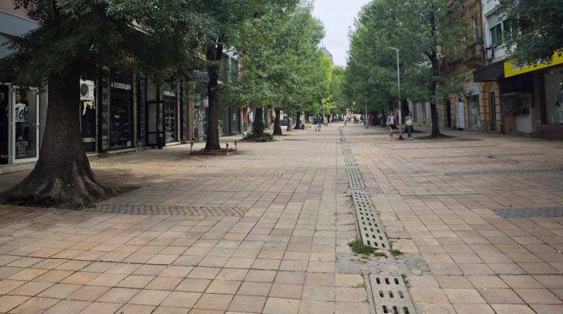

It was chosen a executer of the repair of the old main street
After the procedures were carried out, a contractor was selected for the repair of the old building on the main street. The project for the reconstruction of this section of the pedestrian zone in the city center is among the priorities of Pleven Municipality, aiming to improve the overall infrastructure. The agreement for country funding was signed by the Mayor of the Municipality, Dr. Hristov, with the Ministry of Regional Development and Public Works, again in March last year. The country funds given for this project amount to 1,110,000 BGN.